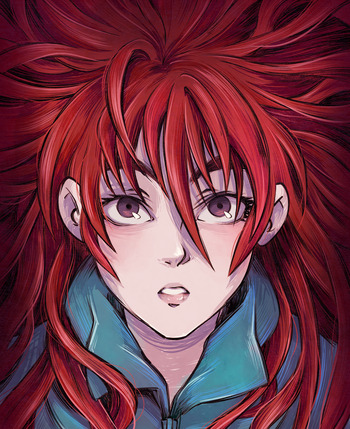
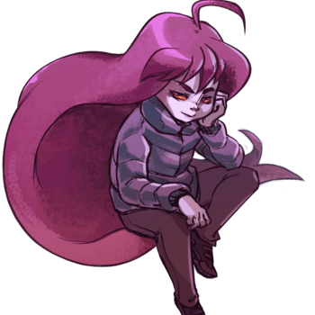
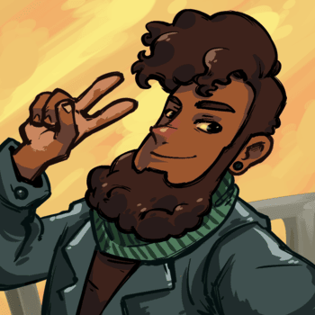
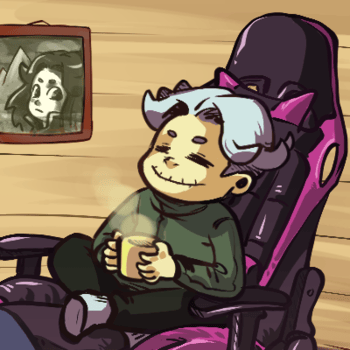
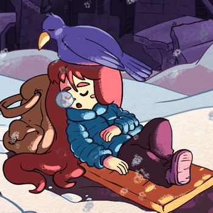

Personagens






Madeline
A protagonista corajosa que escala a Montanha Celeste enquanto aprende a lidar com sua ansiedade, medos e inseguranças enquanto ajuda seus novos amigos no caminho.
Badeline
Antagonista principal da história, uma parte de Madeline que representa seus medos e inseguranças, tentando convencer a protagonista a desistir de escalar a Montanha.
Theo
Um jovem alpinista que também escala a montanha Celeste tirando fotos de tudo para a rede social Instapix, logo se tornando um dos melhores amigos de Madeline.
Granny
Uma senhora que vive ao pé da montanha que questiona a coragem de Madeline no inicio de sua jornada, mas eventualmente se aproxima da protagonista e a ajuda com seus conselhos valiosos e conhecimento da montanha.
Oshiro
Um fantasma residente do hotel "Celestial Resort" em que trabalhava no meio da montanha, que agora se encontra abandonado. Oshiro é uma alma perdida que se vê responsável pelo hotel mesmo após sua morte.
Bird
Um pássaro misterioso que aparece em momentos-chave, funcionando como guia ao jogador oferecendo tutoriais durante a jornada. Ele é bem próximo da Granny e normalmente está ao redor dela.